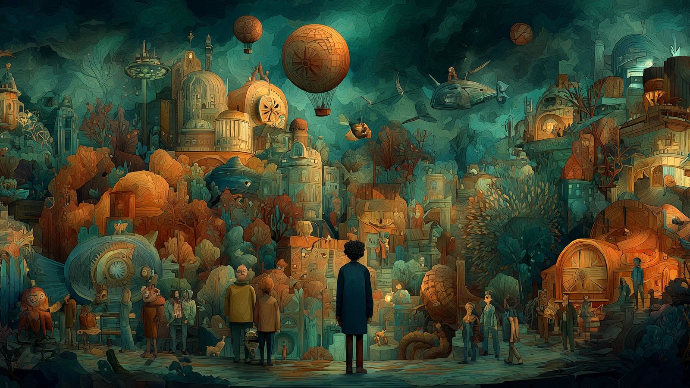
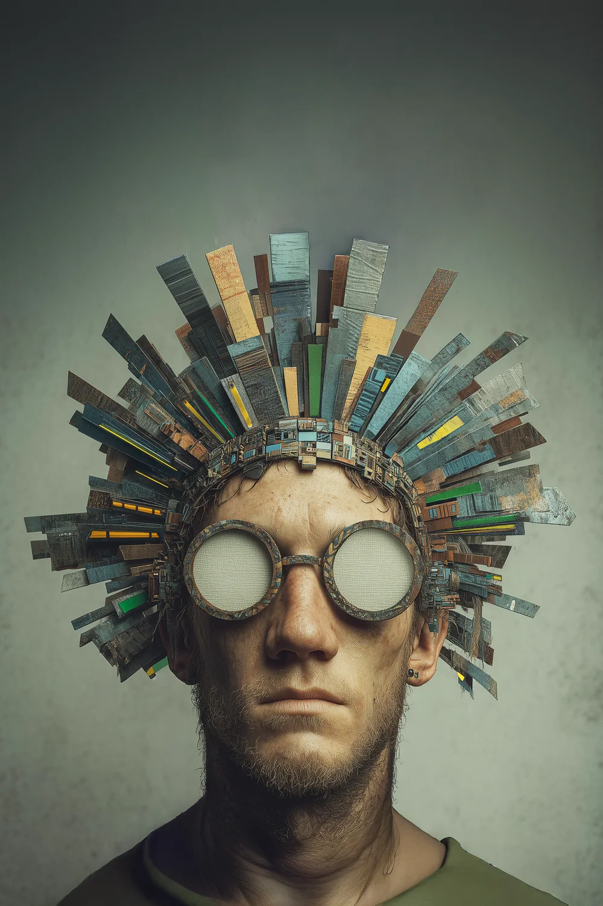

Vai q AI
Um laboratório brasileiro onde a IA serve ao olhar humano. Em 15 meses, o perfil saiu de 30 para 13,7 mil seguidores, hoje com crescimento 100% orgânico.
Desafio
Criar do zero uma marca cultural com IA, num território em que o conteúdo costuma ser decorativo e dependente de trend. O ponto de partida foi um perfil com 30 seguidores, sem personagem fixo e sem grande verba.
A Vai q AI é o laboratório próprio da VBRA, e o nome já diz o espírito: o “vai que dá” brasileiro, feito com inteligência artificial.
Estratégia
Separamos o que é DNA do que é distribuição. O DNA não muda: emoção humana, narrativa e provocação, com olhar brasileiro. A estética é laboratório: cada linguagem é testada, medida e mantida só quando funciona.
Brazilian eyes on human stories, revealing meaning.
Criação
Nove linhas criativas com direção de arte, roteiro e produção feitos com IA, do Reel curto à ficção em série no YouTube, como Redentor: O Coração do Rio.


Comunicação
O Instagram é a porta de entrada e o YouTube, o destino das narrativas longas. Usamos legendas bilíngues pensadas como design e mídia paga mínima, só para a tração inicial.
O Reel Maracatu (271 mil views e 8,5 mil compartilhamentos) marcou a virada: desde ele, o crescimento é 100% orgânico.
Pele Viva · processo criativo, do storyboard à tela